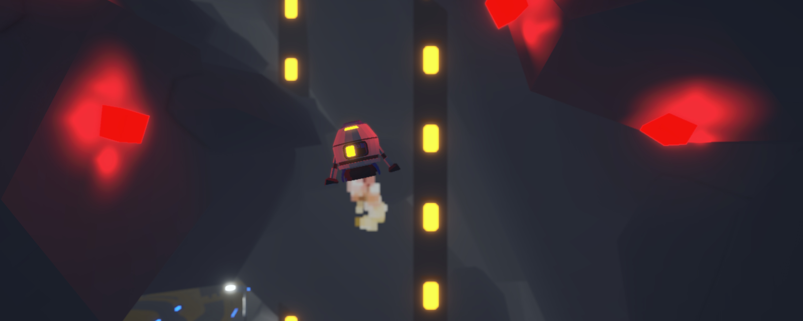
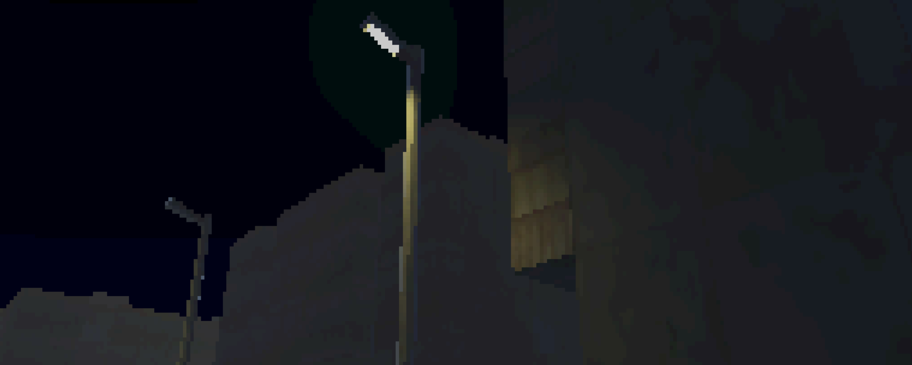
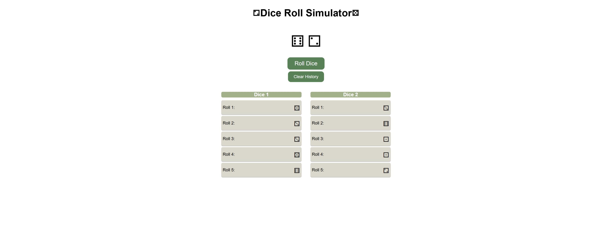

Ideas in motion, code in place.
I craft games and web projects that challenge both logic and creativity. Each project is a learning opportunity, pushing me to solve problems and refine my coding skills.
I enjoy exploring new ideas, experimenting with mechanics, and turning concepts into interactive experiences. While I focus on steady progress and careful iteration, I also value efficiency and clarity in my work.
My approach is hands-on: I dive into projects, figure out what works, learn from mistakes, and keep improving.
This portfolio is a reflection of that journey which shows how I think, what I build, and how I grow as a developer.
See my dev journey below!
Structured course expanding on Unity workflows and C# scripting through guided projects and practical game systems.
Beginner-friendly introduction to Unity and C#, used as an initial learning resource to understand core scripting concepts and engine basics.
Foundations of frontend development: HTML, CSS layout, and responsive design principles.
Project-based frontend course covering HTML, CSS, and JavaScript through short and practical projects.
A precision-based physics game focused on timing, momentum, and player control.
Originally created as part of a Unity course, then expanded beyond the tutorial. I implemented additional systems, UI, and levels independently.
My own long-term solo project — active work in progress
A first-person atmospheric exploration game set after a fictionalized nuclear accident at the Jaslovské Bohunice power plant in 1977 Czechoslovakia, focused on tension, navigation, and environmental storytelling.
Built independently over several months. All models, textures, and level design are created by me.
A small JavaScript project demonstrating basic interactivity and DOM manipulation.
Started from a tutorial and extended with additional functionality and UI improvements.
A small web project focused on JavaScript fundamentals, user interaction, and dynamic DOM updates.
© 2026 Tymofii Yakushevych